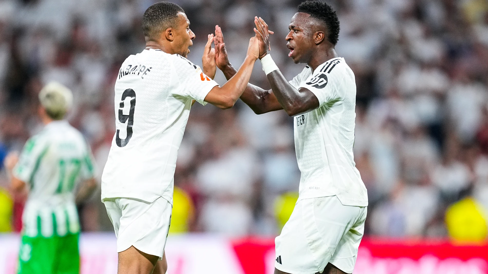

Buscando el milagro
El Real Madrid busca una remontada histórica ante el Arsenal en el mítico Santiago Bernabéu. Después de un partido de ida complicado en Londres, donde el equipo español sufrió una derrota por 3-0, los jugadores y el cuerpo técnico confían en el apoyo de su afición para lograr una noche mágica. Con figuras como Mbappé y Vinicius liderando el ataque, el equipo blanco espera repetir hazañas históricas como las vividas en otras ediciones de la Champions League. La presión está en su punto máximo, pero el Real Madrid ha demostrado ser un equipo que nunca se rinde en los momentos más difíciles.
